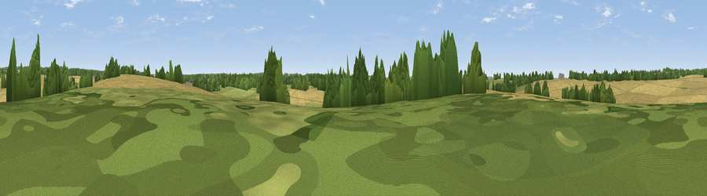

Park Hill
#45182 in England · top 95% of its area beats it · near MicheldeverWhere it is
The exact computed spot (SU 52092 40373). Click the marker for map links.
The view, rendered

A 360° render of this exact spot computed from the terrain model, tree cover and land cover — summer colours, afternoon light, calibrated against photographs of famous viewpoints. Real trees, hedges and buildings will differ in detail.
The panorama
Grey silhouette: terrain skyline in each direction (720 bearings, Earth curvature and refraction included). Dashed green: skyline with trees (+15 m) and buildings (+8 m) as obstacles. Blue strip: how far the ground is visible on each bearing.
Where the view opens
Wedge length = distance to the farthest visible ground on that bearing (vegetation-aware). Rings at 10, 25 and 50 km.
What fills the view
69% cropland · 18% woodland · 12% grassland ·
Angular shares of the visible panorama (visual magnitude), not map area. Landscape diversity 0.37 (0–1 Shannon).
Key numbers
More beautiful places nearby
The staircase of upgrades: each row has a higher view potential than everything closer. Driving times are estimates from straight-line distance, calibrated against real road routing — check an actual route before setting out.
| Place | Direction | Drive | Score |
|---|---|---|---|
| Weston Down | NNW · 3 km | ~7 min | 34.9 |
| Cocksford Down | NNE · 4 km | ~10 min | 47.0 |
| Viewpoint near Dummer | NE · 10 km | ~19 min | 50.9 |
| Viewpoint near Chilcomb | S · 12 km | ~23 min | 63.9 |
| Viewpoint near Stockbridge | WSW · 15 km | ~27 min | 64.3 |
| Cottington's Hill | N · 16 km | ~29 min | 65.6 |
| Viewpoint near Sparsholt | SW · 16 km | ~29 min | 66.9 |
| Watership Down | N · 17 km | ~29 min | 71.4 |
51.16025, -1.25646 · source: osm peak · position refined by local search. Computed location — check access rights before visiting.